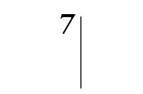
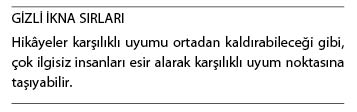
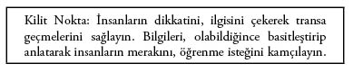
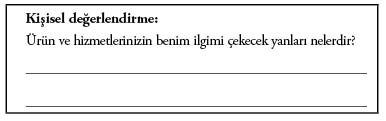
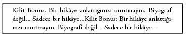

Gizli İkna Taktikleri’ni Anlatacağınız Hikâyede Kullanmanızı Sağlayan 20 Kilit Nokta
İletişimin Amacı Etkilemektir
Bu bölümde, karşınızdaki insanları anlatacağınız hikâyelerle etkilemenin yollarını anlatacağım. Öncelikle, gizli ikna taktiklerini anlattığınız hikâyede kullanmanızı sağlayan 20 kilit noktayı, ardından da herhangi bir bilgiyi karşınızdaki kişiye ya da dinleyicilere hikâye formunda sunmanın yollarını göstereceğim.
Çoğu iletişim mesajı, kişiyi arzulanan sonuçlara ulaştırmaz. Neden? Çünkü, birçok iletişim mesajı bilinçli bir şekilde hazırlanarak sunulmaz da ondan.
Gizli İkna Taktikleri’ni (Bilinçli Gizli Etkileme Taktikleri) en etkili kullanma yöntemi, hikâyelerdir. Bu taktikler sayesinde, hikâyelerin sizi istenilen sonuca ulaştırma, karşı tarafı da sizin gibi düşünmeye ikna etme olasılığını yükseltirsiniz. Birçok insan bir hikâye anlattığında olanları düşünür. Hikâye, genellikle sıkıcıdır. Önlerindeki arabanın birdenbire durmasıyla ilgili bir hikâyedir. Az kalsın öleceklerdir. İnsanlar kaçmak için fırsat arar.
Örneğin; aşağıdaki hikâyeyi okuyalım:
Salon tıka basa doluydu. Yirmi iki kişi, yemek için uzun bir masaya sıralanmıştık. Eğitim sırasında yemek molası vermiştik. Eğitimcilerden biri olan Ron Stubbs’ın yanında oturuyordum. Stubbs o sırada arkadaşım Katherin’le konuşuyordu. Karşımda bir kadın oturuyordu. Yüzünü ve ismini hatırlamıyorum; ama, o anı unutamıyorum.
Garson 20 dakikadır ortalıkta yoktu. Yemek servisini bekliyorduk. Karşımdaki kadın bu süre zarfında aralıksız konuştu. Kibar görünmek amacıyla sürekli başımı sallayıp duruyordum. Yorulmuştum. Ancak, kadın beşinci dakikadan itibaren anlattığı hiçbir şeyi dinlemediğimin farkında bile değildi.
Tüm detaylarıyla Sedona gezisini anlattığını hatırlıyorum. Anlatırken enerji girdabıyla ilgili bir şeyler de söylemişti. Genelde “enerji girdabı” sözünü duyduğumda ilgiyle dinlemeye başlarım. Ancak, çok yorgundum. Kadın da zaten bu konudan yaptığı geziyi anlatmaya dönmüştü. Hatırlamıyorum... Hiçbir şey... Bir şeyler anlatıyordu... Bir yandan limonlu bir diyet içeceği içiyor, bir yandan başımı sallayıp duruyordum. Ron ve Katherin’in eğitim hakkında konuştuğunu, masadan sohbet sesleri geldiğini duyabiliyordum.
Ron, kulağıma, “Hey dostum, transa mı geçtin?” diye fısıldadı. (Böyle söylediğini, daha sonra anlattığı için biliyorum.) Anlaşılan gözlerimi kırpmışım. Karşımdaki kadın “Sizce de öyle değil mi?” diye sordu.
O an kadının anlattığı bitmek bilmez hikâye sırasında dalıp gittiğimi anladım. Neyse ki Ron dışında fark eden olmamıştı.
Ron kulağıma eğilerek güldü. O an, çok rahatsız olduğum halde, “Anlayabiliyorum” diyebildim. (Bu, karşınızdaki insanı anlamadığınız, duyamadığınız, sıkıntıdan dinlemediğiniz zamanlarda sizi zor durumlara düşmekten kurtaran otomatik bir yanıttır.)
Ron, sol kolunu sırtıma dolayarak sol omzumu tuttu. Sağ eli de sağ omzumdaydı. Karşıdaki kadına bakarak, “İki dakika müsaade eder misiniz?” diye sordu.
Ardından kulağıma, “Az önce sana acil psikiyatrik yardım yaptım. Bana borçlusun” dedi. Gerçekten borçluydum. Aslında sırf beni değil; tüm sınıfı kurtarmıştı. Çünkü, kadının hikâyeleri beni bloke etmişti. Ron, o günkü programdan beklentileri hakkında bir şeyler daha anlattı. Neyse ki, tam o sırada yemekler geldi.
Dinleyiciyi Esir Alın
Sıkıntı hakkında bir hikâye, dinleyeni kendine esir edebilir! Dinleyen kişi, anlatanın yaşadıklarını yaşadığını hissedebilecek noktaya ulaşabilir. Aynı şekilde, hikâye, dinleyeni tamamen bloke de edebilir. Kişinin sıkıntıdan bitkinlik noktasına ulaşması uzun sürmez.
Anlattığınız hikâyenin bir amacı olmalıdır. Aşağıdaki üç soruyu yanıtladıktan sonra, 4-20 arasındaki ipuçlarını dikkatle okuyun.
#1 Niyetiniz nedir?
Bu hikâyeyi neden anlatıyorsunuz? Konu nedir? Niyetiniz nedir? Eğlenmek, insanları güldürmek amacıyla mı anlatıyorsunuz? Yoksa, bir konu yok mu? Düşünmeden, öylesine mi konuşuyorsunuz?
#2 Hikâyenizi dinleyen insanın ne düşünmesini ya da hissetmesini istiyorsunuz?
Sakın, “Belki beni severler” diye düşünmeyin. “Onları önemsediğimi, sorunlarına ilgi gösterdiğimi bilmelerini istiyorum” diye düşünün.
Ya da “Kendilerini iyi hissetmelerini istiyorum. Bu yüzden kendi anlattıkları hikâyeden daha beterini anlatacağım. Bir hikâye anlatmaya karar vermeden önce uzun uzun düşüneceğim” deyin.
Kimi zaman en iyisi, hiçbir şey anlatmamaktır. Bu, en başarılı hikâyecilerin sık sık kullandığı bir yöntemdir.
#3 Amacınız nedir?
Burada hikâyeyi anlatma niyetinizden değil; karşınızdaki kişilerle ilişkileriniz ve planlarınızdan söz ediyorum. Kendi kendinize, “Hangi hikâyeler hem kendileriyle ilgilenen, onlar için kaygılanan güvenilir biri olduğum izlenimi uyandırır hem de onların işine yarar?” diye sorun. “Repertuarımda, bunu gerçekleştirmemi sağlayacak hikâyeler var mı?”
Kendi kendinize, “Kevin’e bu hikâyeyi anlatma nedenim, Kevin’in... istememdir” demeli ve anlattığınız hikâyenin Kevin’i bu noktaya taşımasını sağlamalısınız.
İnsanlar, bir hikâyeyi neden anlattıklarını baştan düşünseler, daha az şey anlatırlardı. Size neden bir hikâye anlattığımı ya iyi bilmeli ya da hiç anlatmamalıyım.

Not: Bir hikâyeyi anlatmakta bir amacınızın olması, o amaca ulaşacağınız anlamına gelmez. Karşı taraf, inanç, önyargı, değer süzgecinden geçirdiği hikâyenizi bambaşka şekillerde algılayabilir. Özellikle birden fazla insana hikâye anlattığınız zamanlarda böyle durumlarla karşılaşabilirsiniz.
İki şeyi aklınızda tutun: Öncelikle, anlattığınız tüm hikâyelerin sakinleştirme amacı taşımadığını bilmelisiniz. İlettiğiniz mesajların birçoğu duyguları harekete geçirmeye, karşı tarafı etkilemeye yöneliktir. Unutmamanız gereken bir diğer şey de şudur: Anlattığınız hikâyeler konusunda farklı insanlardan benzer yorumlar alıyorsanız, anlattığınız hikâyenin yararını, değerini gözden geçirmenizde fayda olabilir.
Şu uyarıyı da aklınızdan çıkarmayın: İletişim ustaları, ister olumlu, ister olumsuz olsun, karşı tarafta en büyük tepkiyi uyandıran kişilerdir. Bill Clinton ve Ronald Reagan’ı düşünün. Farklı yapılardaki, farklı inançlardaki bu iki insan, kendileriyle hemfikir olmayanların bile saygı duyduğu başarılı birer iletişim ustasıydı. Duygular, insanları etkiler.

#4 Dinleyenlere kendiniz hakkında; değerlerinizi, inançlarınızı, kalbinizin temizliğini gösteren ve böyle düşünmenize, hissetmenize yol açan deneyimler hakkında bilgiler verin.
Özetle: Tek bir konuya odaklanın. Hikâyenizi, bir biyografi ya da gezi yazısı tadında anlatırsanız, dinleyenler ilgisini yitirecektir.
Karşınızdaki insanın sadakate önem verdiğinizi, Tanrı’ya inandığınızı, Red Sox takımını tuttuğunuzu öğrenmesini istiyorsanız, o konuya odaklanmalısınız. Tek bir örtülü mesaj seçin ve o mesaja sadık kalın.
Tek bir hikâye kapsamında çok fazla şey anlatmaktan kaçının. İyi bir hikâye en fazla dört dakika sürer. Bu dört dakikalık hikâyeleri, yarımşar saat arayla anlatmalısınız. Küçük gruplara hitap ediyorsanız, daha kısa ve özlü hikâyeler tercih etmelisiniz. Elli kişiden fazlasına sesleniyorsanız, daha uzun (altı-yedi dakikalık) hikâyeler anlatabilirsiniz. Tabii duygusal ya da hareketli olması koşuluyla...
Kendinizi ifade etmeniz gerekir. Çünkü, iletişim kurduğunuz kişiye kim olduğunuzu, nasıl biri olduğunuzu anlatmalısınız. Ancak kendinizi, karşı tarafı tehdit edecek şekilde ifade etmemelisiniz.
Kendinizi öven sözleri, başkalarının ağzından aktarın. Ne kadar zeki olduğunuzu anlatmak istiyorsanız, birilerinin size ne kadar zeki olduğunuzu söylediğini anlatın. “Örtülü” anlatımın güzelliği buradadır. Kişisel tanıklıkların, bilimsel araştırmalardan daha etkili olmasının nedeni de budur. Tek bir mesaj veren ifadeler de, aynı anda ne kadar zeki, ne kadar yakışıklı ve ne kadar iyi bir bahçıvan olduğunuzu anlatan ifadelerden daha etkilidir.
İyi bir hikâye:
1. Bir amaç, karşınızdaki kişiye aktarmak istediğiniz bir mesaj taşımalıdır.
2. Bilinçli olmalıdır. Neyi, niye anlattığınızı net bir şekilde bilmeniz gerekir.
Kimi insanlar konuştukça konuşur; ama, bir şey anlatmaz. Niyetlerini bir türlü anlayamazsınız. En kötüsü de, bu insanlar karşılarındaki insanların kendilerini dinlemediğini, akıllarının çoktan başka yerlere gittiğini fark edemezler. Niyetinizi aklınızdan çıkarmamalı, sizi dinleyen kişinin tepkilerine çok dikkat etmelisiniz.
#5 Kişilerin ilgisini çekerek esir alın.
Mutlak bir “esir alma durumu” olmalıdır. Bir insan kendisini sözlerinize kaptırdığında çevresinde olup biten diğer şeyleri duymaz olur. Bu yolla kendinizle dinleyiciniz arasında bir tünel oluşturarak bu tünelde buluşmalısınız. Karşınızdaki kişiyi tünelin öteki ucunda karşılayın. Elinden tutarak, kendi tarafınıza ulaştırın.
Neler dikkat çeker?
• Sizinle tutkulu bir şekilde hemfikir oldukları konular (kürtaj yanlısı/kürtaj karşıtı, silah yanlısı/silah karşıtı gibi).
• Karşı tarafı heyecanlandıran tartışmalı bir konu. (Dikkatlerinin anlattığınız hikâyeden kendi duygularına yönelmesine yol açacak kadar heyecanlı ve sizi dinlememeye başlamalarına yol açacak kadar sıkıcı olmayan bir şekilde.)
• Konunuzla doğrudan ilgisi olmayan şeyler. (Maçlardaki molalar sırasında, izleyicinin dikkatinin dağılmaması amacıyla kameraların ponpon kızlara yönelmesi gibi.)
• Ortam: Hikâyenin geçtiği (içinde bulunduğunuz restoran) ya da kendinize güveniyorsanız, hikâyenin dinleyeni götürmesini istediğiniz yer.

Başka şeyler de vardır. Ancak, kilit nokta şudur: Dinleyiciyi uyandırmak. Kendilerini kaptırdıkları yaşamdan ÇIKARMAK ve kendi dünyanıza götürmek... Amacınız, karşı tarafı heyecanlandırmak olmalıdır. Ancak, bunu yaparken olayı tartışma boyutuna taşımamalısınız. Heyecanlandırın; ancak, dolup taşmalarına yol açmayın. Heyecanlandırırsanız esir almayı başarırsınız. Dolup taşmalarına yol açarsanız, siz kaybedersiniz.
Las Vegas’taki MGM Grand Garden Arena’nın on dördüncü sırasındaydım. Paul McCartney yeni albümünün tanıtım turnesine çıkmıştı. Şarkısında, “Cesaret ile tedbirsizlik arasında ince bir çizgi vardır... Karmaşa ile yaratıcılık arasında ince bir çizgi” diyordu. Yalın; ancak, derinlikli sözlerdi. Şarkılar aracılığıyla bu kadar zekice hikâyeler anlatabilmesinin nedenlerinden biri de buydu.
McCartney 2005. İşte bütün mesele bu. Hikâyenizi anlatabilmenizi sağlayan şey, dinleyenlerin büyülenmesi ve çekip gitmek istememesi... Rahatsız olmuyorlar. Tam aksine, duydukları ilgi kendilerini size çekiyor. Gerilim zaman zaman artabilir. Bu gerilim, hikâye sırasında belirli aralıklarla boşaltılmalıdır.
Bir korku hikâyesinin etkili olabilmesi için, dinleyenlerin kaçıp gitmemesi gerekir. Dinleyenin kalbi hızla çarpmalı; ancak, panik atağa da yol açmamalıdır. Birtakım ayrıntılara değinseniz de, gereksiz ayrıntılara girmemelisiniz. Ayrıntılar kısa sürede çok sıkıcı bir hal alabilir. Birkaç saniye içerisinde tüm heyecanınızı, ilginizi yitirebilirsiniz. Konudan uzaklaştığınız an, sürüklenen zihinleri tekrar hızla yakalayabilmeniz gerekir. Bu amaçla kullanabileceğiniz birçok şey vardır. Ancak, her bir cümlenin, dinleyiciyi etkileyecek bir kesinlikte bitmesine özen göstermelisiniz.
#6 Bilgileri, dinleyicinin merakını, öğrenme isteğini artıracak bir yalınlıkla verin.
Kesinlikle çok zeki ya da çok aptal görünmeyin. Her şeyi, algılanabilecek düzeyde aktarın. Asla çok basit ya da çok karmaşık anlatma hatasına düşmeyin. Karşınızda bir asker yoksa yiyecek bir şeyler almak üzere PX’e gittiğinizi anlatmayın. Dinleyenlerin ortamına ayak uydurun.
İnsanlar yeni şeyler, özellikle de sırlar öğrenmek ister. Anlaşılması kolay olduğu sürece, işlerin nasıl yürüdüğünü öğrenmek ister. Aksi halde her şeyi unutun. Teknik bir şey anlatmıyorsanız, hikâyenizin olabildiğince yalın ve duygusal olmasına gayret edin.
#7 Alçakgönüllü davranın.
İnsanlar sizi tanımak, size güvenmek, size inanmak ister. Hikâyelerinizi olabildiğince alçakgönüllü bir tavırla anlatın. Kibir size zarar verir. Karşılıklı uyumu yok ederek dinleyicinin ilgisini ortadan kaldırır.
#8 Dinleyicinin hem duygularına seslenin hem de duygularını etkileyen canlı betimlemeler kullanın.
Karşınızdaki insanların beyinlerindeki güvenli noktaları olabildiğince harekete geçirin. Gördüklerinizi, duyduklarınızı, hissettiklerinizi, kokladıklarınızı anlatın. Karşınızdaki insanın da bunları hissedebilmesini sağlayın. Dinleyiciyi kendinize ancak, bu şekilde esir edebilirsiniz.
#9 Dinleyiciyi zaman içerisinde yolculuğa çıkarın. Şimdiki zamandan bilinçli olarak kaçının.
Dinleyenleri geçmişe götürün. Şimdiki zamanda rahatsızlık duyacaklarını unutmayın. Ancak, geçmiş ya da gelecek zamanda anlattığınız hikâyeler aracılığıyla dinleyeni kendinize esir edebileceğiniz bir noktaya ulaştırabilirsiniz.
Onlara o anı yaşatın. Asla biyografinizi anlatmayın. Tek ve yalın bir hikâye anlatın. Onlar da kendi hikâyelerini anlatmadığı ya da daha fazla anlatmanızı talep etmediği sürece, yenisine geçmeyin.
#10 Gerçekçi, dürüst ve samimi olun.
Anlatacağınız hikâye, kaleme almadığınız sürece, her seferinde farklı olacaktır. Kalbiniz ve ruhunuz her an tetikte olmalıdır. Hangi durumda olursanız olun, bir hikâye anlatırken, her bir kısmını neden anlatmakta olduğunuzu aklınızdan çıkarmayın. Bilincinizi ve hedefinizi yitirmemelisiniz. Dinleyicinin de sizinle paralel bir şekilde ilerlemesini sağlamalısınız.
#11 Anlattığınız hikâye tarihsel açıdan doğrulanabilecek, dinleyicinin ortak tarih bilincini harekete geçirecek isimler, tarihler, yerler içermelidir.
Bu, bu kitaptaki en etkili gizli tekniklerden biridir. Tarihleri ve yerleri aklınızda tutun. Neyi, nerede yaşadığınızı unutmamaya çalışın. Bu ayrıntılar size güvenilirlik katarak karşılaşabileceğiniz dirençleri büyük ölçüde ortadan kaldıracaktır.
İnsanlar, bir şeyin doğruluğuna dair kanıtlar görmek ister. İsimler, tarihler ve yerler aslında bir şey kanıtlamasa bile, en azından dinleyicinin zihninde hikâyenin gerçek olduğu yanılsamasını yaratacaktır. Gerçekler de önemlidir. İnsanlar isimleri, yerleri, tarihleri duyduğunda, sizinle birlikte o noktaya yol alabilir. O noktaya ulaştıkları andan itibaren de, sizinle aynı şeyleri görecekleri, duyacakları, hissedecekleri için, gerçekleri anlatıyor olursunuz.
Hikâye ister kurgusal olsun, ister gerçek; dinleyici, isimleri, tarihleri, yerleri duyduğu an, olay kurgu olmaktan çıkar, dinleyicinin belleğinin bir parçası halini alır. Bu olayı, gerçek kabul eder, sizi tanımaya başlarlar. İnsanlar sizi tanıdığı sürece de daha fazla ve daha çabuk sevmeye başlar.
#12 Anlattığınız hikâyede başka insanlardan da söz ediyorsanız, karakterleri doğrudan kendi ağızlarından konuşturun. Üçüncü kişi gibi söz etmeyin.
Artık kimsenin uygulamadığı bu yöntem aslında hâlâ çok etkilidir. “Elimden geleni yapıyorum, dedi” ile “Elinden geleni yaptığını söyledi” cümlelerini karşılaştırın.
Bir karakteri ne kadar gerçek kılarsanız, hikâyeniz de o kadar canlılık kazanır. Gerçekleştirdiğim ilk kitap turu sırasında, Chicago’da karşılaştığım tekerlekli sandalyedeki kızı hatırladığını söyleyen insanların sayısını anımsayamıyorum bile. Başka şeyler hatırladığını söyleyen insanlar da var. Ancak, tek hatırladıkları şu: Barnes and Noble, Chicago, Temmuz, 1996.
#13 Hikâyeniz, sizin ya da başkalarının hedeflerini gerçekleştirmesine yönelik önemli dersler, ipuçları içermelidir.
Örneğin; Al’ın çıkmayı gerçekten çok istediği bir kadına, onunla ilgili bir hikâye anlatıyorum. Aynı zamanda Etkileme: Şubat Ayı Eğitim Kampı’na (Eğitim Kampı, her yıl Las Vegas’ta gerçekleştirdiğim imza gününe verdiğim addır) katılmasını istiyorum.
“... Bu arada, Etkileme: Eğitim Kampı’nda öğrendiği bilgiler sayesinde bir kitap anlaşması yapan tek kişi de Al değildi.”
Kadın, bu sayede Al’ın Eğitim Kampı’na gittiğini, bir kitap anlaşması yaptığını, Eğitim Kampı’nda işine yarayabilecek bilgiler alabileceğini öğrenmiş bulundu. Birçok hedefi, Al hakkındaki bir hikâyede kolaylıkla bir araya getirebildim. Bu tek cümlenin ardından Al konusundaki hikâyeye dönerek, Eğitim Kampı’nda ne kadar başarılı olduğunu anlatmayı sürdürebilirim.
#14 Dinleyicinin kendisini sizinle özdeşleştirebileceği bir konumda bulunmalısınız.
Bunu doğrudan ya da hayali ortak deneyimler aracılığıyla gerçekleştirebilirsiniz. Dinleyiciye, “Ben de aynısını yaşamıştım” dedirtebilmeniz gerekir. Benzer bir deneyim yaşamamış olsalar bile merak uyandırmalı, “Ben de hep merak etmişimdir” dedirtebilmelisiniz. Evet, ben de dinleyicilerden biriyim.
“Kim derdi ki... ben... Kevin Hogan... Chicagolu bir çocuk... Polonya’nın en önemli insanlarının karşısında otururken... kravatım düzgün mü diye düşünecek... Kalbimin küt küt attığı hissediliyor mu acaba diye merak edecek.”
Bir insanın heyecanını hissetmek kolaydır. Üstelik hepimiz önemli insanlarla bir arada bulunmaktan hoşlanırız. Bu nedenle, yukarıdakine benzer sözler, anlattığınız hikâyeyi güvenilir kılarak, dinleyiciyle kolaylıkla bağ kurabilmenizi sağlayacaktır.
#15 Hikâyeniz gizli anlamlar barındırsın.
Anlattığınız hikâye, doğrudan sizin tarafınızdan da aktarılabilecek ya da hikâyenin bir parçası olarak sunulan bilgiler içerebilir. Ben (hikâyeyi anlatan kişi) vereceğim dersleri genellikle başka insanların ağzından aktarırım. Bu sayede vaaz verir gibi görünmekten kurtulurum. Bir şeyler öğrenmişimdir ve öğrendiklerimi olduğu gibi aktarıyorumdur. “Bunun X açısından ne kadar önemli olduğunun farkında değildim.”
Dinleyiciye vermek istediğim mesaj budur. Onların X eylemini gerçekleştirmesini istediğim halde, doğrudan X yapmalarını söylemem. Eskiden bunun X açısından ne kadar önemli olduğunu bilmediğimi söylemekle yetinirim.
#16 Ne kadar mükemmel ve gerçek olduğunuzu incelikle anlatın. Bunu siz değil; hikâyedeki kişiler anlatsın.
“Kevin, Barnes and Noble’dan bir mektup aldık. Bir yazarla yaşadıkları en iyi deneyim olduğunu söylüyorlar.” Siz, dinleyiciye ne kadar harika bir insan olduğunuzu anlatamazsınız. Ancak, hikâyenizdeki insanlar anlatabilir.
#17 Karizma ve cazibeyi, hikâyenizdeki diğer insanları konuşturarak sağlayabilirsiniz.
Araya, kendinizle dalga geçerek, tevazu göstererek kendinizi yüceltebileceğiniz parçalar sokuşturabilirsiniz. Tabii ki zayıf noktalarınızı, yetersiz yanlarınızı; yani, “insani yanlarınızı” sergilemelisiniz. Anlattığım tüm hikâyelerde kendimle dalga geçerim. Zayıf noktalarımı, düştüğüm yanlışları, insani hatalarımı anlatırım. Dinleyicilerin duymak istedikleri, kendileriyle özdeşleştirebilecekleri şeylerdir bunlar. Kişinin kendisiyle dalga geçmesi, önemli hikâyelerin olmazsa olmazlarından biridir.
#18 Anlattığınız hikâyede dinleyiciye inanma, güven duyma, kendi çözümlerini geliştirme fırsatları sunun.
Karşınızdaki kişinin, “O başardıysa ben de yaparım” demesini sağlayın. Bir başka ifadeyle, doğrudan x demek yerine, dinleyicinin x demesini sağlarsanız, anlattıklarınızı çok daha içtenlikle ve kolaylıkla kabulleneceklerdir.
#19 Harekete geçmeleri konusunda onları özendirin.
Hikâyeniz, dinleyicinin başkalarına aktarabileceği, aklına getirdiği an hissedebileceği kadar yalın, etkili ve akılda kalıcı olmalıdır. Repertuarınızdaki tüm klasik hikâyeler, dinleyenin sokakta karşılaştığı insanlara aktarabileceği, ardından da “İnanılmaz bir konuşmacı... Ne dedi biliyor musun?” diye bitirebileceği hikâyeler olmalıdır.
O anı yaşatmanın gücünü aklınızdan çıkarmayın.
#20 Alıntılar yapın.
Şu örnekleri dikkatle karşılaştırın:
Bana, delirmişim gibi baktı. “Kevin, seni aptal! Ne yaptığını sanıyorsun? Aklını mı kaçırdın?”
Bana delirmişim gibi bakarak, aptal dedi.
Gözlerini gözlerime dikerek, “Kevin Hogan, seni seviyorum” dedi.
Gözlerini gözlerime dikerek beni sevdiğini söyledi.
Şaşkınlıkla bana bakarak, “Kevin, bunu gerçekten yaptın mı?
Hayret! İnanılmazsın. Bunu nasıl yapabildin?” dedi.
Şaşkınlıkla bana bakarak, inanılmaz olduğumu, bunu nasıl yaptığımı merak ettiğini söyledi.
İşte bu kadar basit... Ya da bu kadar zor... Şimdi, kaçınılması gereken başka bir faciadan söz edeceğiz.

Hikâyeler genellikle bir olay içerir. Bir gün ya da bir saat içerisinde birbiriyle bağlantılı, biri diğerini doğuran iki olay... Sizi dinleyen kişi kendi hikâyesini anlatmadan peş peşe iki hikâye anlattıysanız, uçurumun kenarına geldiniz demektir. Artık, susma zamanıdır. Gizli hipnozda, kilit noktanın örtülü davranmak olduğunu aklınızdan çıkarmayın. Hikâye anlatırken en sık karşılaşılan sorunlar böbürlenmek, abartmak ve sıkıcı olmaktır.
Sizi öven sözleri ya başkasının ağzından aktarın ya da hiç söylemeyin. Şu iki ifadeyi karşılaştırın:
Birinci seçenek: Kevin: “Harika bir konuşmacıyım. Tam bir Rönesans adamıyım.”
İkinci seçenek: Birileri, “Kevin, harika bir konuşmacı ve parlak bir yazarsın! Bir Rönesans adamı olmayı nasıl başardın?” dedi. Rönesans’ın anlamını bilmediğim için ezilip büzülüyordum. İyi bir şey olduğunu hissediyordum; ama, ne demek olduğunu bilmiyordum.
Farkındaysanız, ikinci seçenekte bir hayranınız size söylemiş olduğu için, bu övgü dolu sözleri tüm dünyaya duyurabiliyorsunuz. İnsanların, bu hayranınıza itiraz etme, onunla tartışma olanağı yoktur. Oysa, bunları kendiniz dile getirseniz, kendini beğenmiş biri olduğunuzu düşünürler.
Gizli İkna Taktikleri’ni kullanarak bir hikâye anlatmanın 20 kilit noktasını öğrenmiş bulundunuz. Şimdi bir iki hikâye aracılığıyla bu araçları nasıl kullanabileceğinize bakalım. Kürsüde, dinleyicilere bir hikâye anlattığımı farz edelim. Bu hikâyede hiçbir alıntı olmayacak. Parantez içindeki ifadeler hariç, okuduğunuz her şeyi ben anlatıyor olacağım. Bu sayede siz farkına bile varmadan, neler olduğunu analiz edebileceksiniz!
Hikâye şöyle başlıyor:
Hepimiz hayatta başarılı olabilmek için bir şeyler satarız. Hepimiz zamanımızı ve enerjimizi para karşılığı satarız. Ne kadar zorlu ve başarılı olursak, o kadar çok para kazanırız. Herkes de öyle... Bu nedenle, yeryüzündeki herkes bu insanlara minnet borçludur. Bu insanlar olmasaydı, kimse yapacak iş bulamazdı.
[Satıcılardan oluşan dinleyicilere, kendilerine minnettar olduğumu, işleri yaratan insanların kendileri olduğunu anlattım. Bunu onlar da biliyor, ben de biliyorum. Bildiğimi de onlara ukalalık taslamadan anlatıyorum.]
Bunu küçük yaşta keşfettim. 1972 yılının sonbaharında tek kurtuluşumun satış yapmak olduğunu fark ettim.
[İnsanlara ne kadar önemli olduklarını belirtmek, ideal bir giriş olacaktır... Ardından fark ettiyseniz bir tarih bildirdim... 1972. Tarihler inandırıcılığı artırır.]
Satış yapmaya 10 yaşında başladım. Başlamak da zorundaydım. Beş kardeşin en büyüğüydüm ve beş kuruş paramız yoktu. Üvey babamın kısa bir ömrü kalmıştı. O dönem annem tüm zamanını işiyle, evimizdeki hasta yatağına mahkum babam arasında mekik dokuyarak geçiriyordu. Sefil bir yaşamdı bizimkisi. Chicago’nun alt sınıftan insanların yaşadığı varoşlarında oturuyordum. Herhangi bir şeyi satın alacak para bulabilmek için öncelikle bir şeyler satabilmem gerekiyordu.
İşe, kış mevsiminde insanların garajlarının önlerinde biriken karları küreyerek başladım. Saati, 1 dolar. Chicago’nun gölden esen soğuk kış rüzgarlarını asla unutamam. Kazandığım 3 doları kimi zaman anneme verirdim. Kimi zaman ise kola ve fıstık ezmesi alırdım. Yazları ise; insanların bahçelerindeki çimleri biçer, yabani otları temizlerdim. Yabani otları temizlemekten nefret ederdim.
On yaşımdayken, çim biçmekte bir gelecek olmadığını, zamanımı daha verimli kullanmam gerektiğini fark ettim. Bir Pazar gazetesinde tebrik kartları şirketinin ilanını gördüm. Sattığım her kutu için 50 sentle 2 dolar arasında para kazanabilecektim. Hemen şirkete 10 dolar gönderdim (O dönem 10 dolar iyi paraydı.) Karşılığında bana beş kutu eşantiyon Noel kartı gönderdiler. Kısa bir hesap bile, sattığım her kutu kart için en fazla 1 dolar kazanabileceğimi gösteriyordu. Satış literatürüne göre; bir yıl içerisinde sadece dört satış mevsimi vardı. Yani, bu parayı kazanmam da oldukça uzun bir zaman alacaktı.
Ertesi gün okuldan eve dönüp gazete dağıtımı işimi tamamladıktan sonra, artık; gerçek para kazanmaya hazırdım. Komşularımızın kapısını çaldım. Kapıyı Bayan Gossard açtı. Kartları gösterir göstermez bir kutu satın aldı. İlk dolarımı kazanmıştım! Ardından Bayan Singer’a gittim. O alamayacağını söyledi. Bayan Hendricks iki, Bayan Serdar ve Bayan Makela bir kutu aldı. Birçok insan ise almadı. Akşam sekiz olduğunda, 30 kapı çalmış, yaklaşık 18 kutu kart satmıştım. Güneş batıyordu. Saatime baktım. Eve dönüp çocukları yatırmalıydım. Elimde yaklaşık 60 dolarlık sipariş vardı. Matematik dahisi beynimle, bunun 20 dolarının benim olduğunu hesaplıyordum.
[Mahallemizde oturan insanların isimlerini verdiğimi fark etmişsinizdir. Bu isimler hikâyeye inandırıcılık katarak, dinleyiciyi esir almanızı sağlar.]
Annem siparişleri görünce çok heyecanlandı. Ona, kazandığım tüm parayı kendisine vereceğimi söyledim. Bana, “Hayır. Sen kazandığına göre sende kalacak” dedi. Vay canına! Ertesi gün, başka mahallelere gittim. Gazete dağıtımı geciktiği için çok az zamanım kalmıştı. Sadece 4 kutu satabildim. Kimi evler çok korkutucu görünüyordu. O dönem sıska bir çocuk olduğum için o evlere bir daha gitmemeye karar verdim. Yine de 4 dolar kazanmıştım. Eve dönünce kazandığım parayı anneme söyledim. Annem benden parayı elimde tutmamı istedi.
Sorun, 50 kapı çalmama karşın sadece 4 dolar kazanmış olmamdı. İnsanların Noel kartlarımı satın almamasına inanamıyordum. Anlaşılan bizim mahalledeki insanlar kadar zeki değillerdi. Ertesi gün cumartesiydi. Sabah kalkar kalkmaz Waukegan News Sun gazetesini dağıttım (Sabah 07:00’de dağıtılması gerekiyordu). Çimleri biçtim ve öğlene doğru bisikletime atladım. Daha önce gitmediğim mahallelere giderek 100 kadar kapıyı çaldım. Yemek molası bile vermedim. Toplam 6 kutu kart sattım. Eve gittiğimde hamburger köftesi kalmadığını öğrendim (buna bugün bile minnettarım). Anneme pek iyi bir gün geçirmediğimi söyledim. Altı dolar kazanmıştım. Ancak, bu amaçla otoyollarda bisiklete binmek zorunda kalmıştım. Üstelik daha önce hiç gitmediğim mahallelere gitmekten korkuyordum. Annem, tanıdığım mahallelerin dışına çıkmamamı, otoyola da girmememi önerdi. (Sonraları, oğlunun birtakım yabancı mahallelere gitmesinin kendisini ölümüne korkuttuğunu söylemişti.)
Toplam 28 kutu satmıştım. 30 dolar kadar kazanacaktım. Param, tüm kartları müşterilere ulaştırdıktan sonra ödenecekti. Sabırsızlanıyordum! O hafta çok şey öğrendim. [Ben, Kevin Hogan, öğrenme kapasitesine sahibim.] Beni tanıyan insanların benden alışveriş yapma olasılığının daha yüksek olduğunu öğrendim. Parası olan insanlardan, başkalarına hediye edebilecekleri fazladan bir kutu almalarını isteyebileceğimi öğrendim.
Kart satmanın; çim biçmekten, ot yolmaktan, kar küremekten, gazete dağıtmaktan çok daha iyi olduğunu öğrendim.
Kart satarak yılın sadece 4 haftası çalışabileceğimi öğrendim. Kart satarak yılda 100 dolar kazanabilirdim. Ancak, daha fazla para kazanabilmek için başka şeyler de düşünmeliydim.
Daha da önemlisi; kartları insanlara ulaştırdığımda, insanların gülümseyerek “Teşekkürler Kevin”, “Çok güzelmiş”, “Beklediğimden daha çabuk getirdin” dediklerini görmenin ne kadar keyif verici olduğunu fark ettim.
[Tırnak içindeki ifadelere dikkat edin. Ürünüm ve hizmetlerim hakkında neler anlattıklarına bakın.]
En önemlisi ise; 10 yaşındaki cılız bedenimi pek de yormadan, 20 saat çalışarak 30 dolar para kazanmıştım!
[Gördüğünüz gibi kendimle dalga geçiyorum. Zayıfım. Sıskayım... Öyleydim de gerçekten!]
Sonraki dört yıl boyunca da para kazanmak amacıyla tebrik kartı satmayı sürdürdüm. Çiçek ve sebze tohumları sattım. (Ot yolarak, çim biçerek, kar küreyerek, elimden gelen her şeyi yaparak emeğimi satmayı da sürdürüyordum.) İçlerinde en eğlencelisi kart satmaktı. Kadınlarla (en azından çoğuyla) sohbet etmek eğlenceliydi. Kimileri satış yaptığım o birkaç yıl boyunca beni evine davet etmiş, süt ve kurabiye ikram etmişti. Yaptığım işten gerçekten keyif alıyordum.
Tebrik kartları şirketinin ilanı hayatımı değiştirmişti. Beni zengin ettiği için değil. Etmedi de... Bana yoksulluktan kurtulma umudu verdi. Artık Şükran Günü izci birliklerinin evimize hindi ve giyecek yardımı yapmasına gerek kalmamıştı. (İzciler Şükran Günü gibi günlerde evimize bu tür yardımlar getirirdi. Getirdikleri yiyecek ve giyeceklere minnet duyar; ancak, bunlara muhtaç olmaktan nefret ederdim.) Büyüdüğümde ne iş yapacağıma karar vermiştim: Satış yapacaktım. Öyle de oldu.
Henüz 10 yaşındayken, hızlı düşünebilme ve insanlarla konuşabilme becerimin yoksulluktan kurtulmamı; hatta, zengin olmamı sağlayabileceğini fark etmiştim. Satış işi kimi günler çok zor olabiliyordu; ama, eğlenceliydi. “Bedensel emek”ten çok daha iyi olduğu kesindi.
Satış yapmak bana güvence, özgürlük, bağımsızlık ve verimli olma, insanlardan değer görme becerisi sağlıyordu. Başarılı olabileceğim bir işti.
Hızla 1998’e gelelim.
[Yine bir tarih verdim.]
1998 sonbaharı. Birkaç yıldır altı haneli bir yıllık gelirim vardı. 1987’den beri kendi şirketlerimi yöneterek, başka insanlara satış ve danışmanlık yaparak geçiniyordum. Her gün mesai saatleri boyunca çalışarak yevmiye kazanma fikri, benim için bir fobi gibiydi. Ticaret çok daha iyiydi... Piyasada birkaç kitabım vardı. Bunlardan biri, İkna Psikolojisi, epey iyi satıyordu.
[Gelir düzeyimden öylesine söz ediyorum. Bu bile tek başına inandırıcılık katıyor.]
Ancak, işler kötü gitmeye başladı. Piyasa durgunlaştı. Yaptığım her konuşma için 1000, 2000 dolar para alıyordum. Neler oluyordu? Kimse daha fazlasını vermeye yanaşmıyordu. Şaşırıp kalmıştım. İnsanlar konuşma tarzımı Anthony Robbins’e, görünüşümü ve sahne performansımı Kelsey Grammar, David Letterman ve Drew Carey’e benzetiyordu. Bir insan daha ne isterdi ki? Bu özellik, insanı ömür boyu geçindirecek para kazandırırdı.
[Kim bir saatlik çalışma karşılığı 1000 dolar kazanmak istemez ki? Kim David Letterman ve Anthony Robbins’e benzetilmek istemez ki? Bunları okuduğunuzda neler hissettiğinize dikkat edin.]
Derken günün birinde “Konuşarak Zenginleş” kitabının yazarı Dottie Walters’la tanıştım. Dottie dünyanın en prestijli konuşmacılar ajansının sahibi. “Sharing Ideas” adında, konuşmacılara yönelik bir dergi çıkartıyor.
Yetişkinlere yönelik eğitim katalogunda cumartesi günü “Konuşarak Zenginleş” kitabının içeriğini kapsayan bir kurs vereceğini gördüm. Kim öğretiyor olursa olsun, tüm günümü zaten bildiğim şeyleri dinlemeye ayıracak vaktim yoktu. Ancak, yıllardır Dottie’yle tanışmayı istiyordum. En az 70 yaşında olmalıydı. Geçimimin bir kısmını, konuşmalar yaparak ve ders vererek kazanma fikrini bana onun “Konuşarak Zenginleş” kitabı vermişti. Cumartesi günü izin yaparak Dottie’yi ziyaret etmeye karar verdim. Bir işe yaramasa bile, en azından bana esin verdiği için kendisine teşekkür edebilecektim.
Yirmi öğrenciyle birlikte dersine katıldım. Kadının konuşmasını beş saat boyunca keyifle dinledim. On yıllardır anlattığı şüphe götürmeyen hikâyelerle heyecanı dorukta tutmayı başarabiliyordu. Oldukça yalın, anaç bir tavrı vardı. Kibar ve samimi bir insandı. Kadına vurulmuştum. Sınıfın en arkasında oturup, “satış yapışını izlemenin” insana esin verdiğinden söz etmeme bile gerek yok.
Yine de gelirken düşündüğüm şeyleri görememiştim. Yeni bir şey öğrenememiştim. Ama vurulmuştum. Herkes çıktıktan ve torunu da sınıfta unutulan kitapları, kasetleri topladıktan sonra yanına gittim.
“Dottie, ben Kevin Hogan. Kariyerime senin verdiğin ilhamla başladığımı bilmeni isterim.”
[Tırnak içindeki ifadeyi fark ettiniz mi?]
“Teşekkürler Kevin.” Gözlerini gözlerime dikti. Yorgun görünüyordu. Bunu, daha önce de yaşadım der gibiydi. Sınıfta son kalan kişi, sizi sonsuza dek mahkum etmek ister. Beş saattir kürsüdesinizdir. Otel odanızdaki yatağınıza ulaşmak ve 15 saat aralıksız uyumak istersiniz.
“Dottie, sana bunu vermek istiyorum.” (“İkna Psikolojisi” kitabımı uzattım.)
“Teşekkürler tatlım!” Kibar davranıyordu. Kendi kendime, kadın ilgisini yitirmek üzere, dedim. Ya ne soracaksan sor ya da hemen çık git. Yastığıyla bir randevusu vardı ve şu an kendisine hiç cazip görünmüyordum.
“Dottie, tek bir sorum olacak. Son birkaç yıldır yaptığım her konuşma için ortalama 1500 dolar alıyorum. Bu rakamı bir türlü değiştiremiyorum. İki bin dolardan fazlasını teklif eden çıkmıyor. Ne önerirsin? Ne söylersen yapacağım. Ne olursa olsun. Beş bin dolar seviyesine çıkmayı nasıl başarabilirim?”
“İstedin mi?”
“Anlamadım?”
“5000 dolar istedin mi?”
“Şey, pek sayılmaz... Yani... Hayır... İstemedim.”
Elini koluma koyarak küçük bir çocukmuşum gibi pışpışladı.
[Şu an ustasının dizinin dibindeki bir öğrenciyim. Hiçbir şey bilmiyorum. Bilgi istiyorum.]
“Tatlım, o halde istemelisin.” (Kitabıma bakarak gülümsedi.)
“Sadece iste.”
“Teşekkürler Dottie. İsteyeceğim.”
O güzel Minneapolis akşamında dışarı çıkarken, ne kadar aptal görünmüş olmalıyım diye düşünüyordum. Başarılı yazar, tatlı kadına eğilerek yeryüzündeki en aptal soruyu sorar. Neyse ki, o anı başka gören olmadı.
İleri saralım: Bir ay sonrasına. 1998 kışına. Grip olmuştum. Boğazım yanıyordu. Burnum, hiç akmadığı kadar akıyordu. Kendimi korkunç hissediyordum. Televizyonda CNBC izliyordum. Piyasalar durgundu. Para kazanamıyordum.
Telefon çaldı.
Televizyona, “Kim olabilir?” diye seslendim. Ortalıkta televizyon dışında kimse yoktu.
Telefonu açtım: “Ben Kevin Hogan. Size nasıl yardımcı olabilirim?”
“Kevin Hogan’la mı görüşüyorum?”
“Evet.”
“Sesiniz korkunç geliyor. Ben Satış Birliği’nden [şirketin gerçek adı değil] Richard Marks [bu da adamın gerçek adı değil].”
“Size nasıl yardımcı olabilirim?”
“Minneapolis’teki kış toplantımız için bir konuşmacı ararken internet sitenizle karşılaştık. Bugünlerde ne kadar ücret istiyorsunuz?”
İşte aradığın fırsat Kevin. Son bir ayını, “Konuşarak Zirveye Ulaşın” kitabını tamamlamakla geçirdin. Nihayet bitti. Kitabı yayınevine verdin. Bu adama ne söylemek lazım? Sesin korkunç çıkıyor. Az önce CNBC’ye bağırıyordun... İste yeter, tatlım. Sadece iste..
“Ücretim 5000 dolardır. Ancak, öncelikle, grubunuz hakkında daha fazla şey öğrenmek, tam olarak ne istediğinizi anlamak isterim.”
Richard, grubuyla ilgili bilgi vererek, “beden dili” hakkında bir konuşma yapmamı söyledi ve 4000 dolara razı olup olmayacağımı sordu. Ha 4000, ha 5000 dolar. Sonuçta topu topu bir saat çalışacaksın. Seni aptal! Bir saat yol gidecek ve toplam bir saat çalışacaksın... İste, yeter tatlım... Sadece iste...
“Hayır, ücretim 5000 dolardır. Eminim tam olarak istediğiniz şeyi size verebilirim. Bir saat boyunca hem eğlendirici hem eğitici bir konuşma yapabilirim.”
“5000 dolar konusunda onay almam gerekir. Sizi tekrar ararım. Teşekkürler Kevin. Tekrar görüşmek üzere...”
Kendi kendime, “Seni aptal!” dedim (CNBC’de Ringo Starr’ın rol aldığı bir reklam yayınlanıyordu... Dostlarımdan yardım isteyebilirdim... Ringo...) “Daha ne istiyorsun. 4000 dolar garanti para. Bir zamanlar bu paraya tüm gün çalışıyordun. Şimdi ise 5000 dolar isterim diyorsun. Aptal. Aptal. Aptal.” Sue Herrara ile Ron Insana piyasalarda yaşanan çöküşten söz ettiği sırada kendimi daha da aptal gibi hissettim. O gün boyunca telefon hiç çalmadı.
[Kendimle nasıl dalga geçtiğimi, kendimi nasıl aşağıladığımı fark ediyor musunuz?]
Ertesi gün telefon çaldı. Bekliyordum.
“Kevin Hogan.”
“Gerçekten siz misiniz?”
“Kim arıyor?”
“Richard Marks.”
“Selam Richard. Sesini duyduğuma sevindim.” Kendi kendime, 4000 dolara razı olacağım diyordum. Teklif ettiğin an senin olacağım.
“Kevin, 5000 dolar için onay aldık. İstersen...” O sırada Dottie’nin sözleri dışında bir şey duyacak durumda değildim. Kendi kendime, “Dottie, seni seviyorum...” diyordum. “İste, yeter tatlım.” Senden hiçbir zaman kuşku duymadım Dottie. Yemin ederim... İste, yeter... Üstelik “İkna Psikolojisi” diye de kitap yazmışım... Kendi tavsiyelerine kendin uymuyorsun... Dottie, sen bir numarasın...
“Ne dersin Kevin?”
“Elbette. Ayrıntıları tekrar gözden geçirelim. Şu grip yüzünden kafam biraz dağınık da...”
Anlaşma bağlandı. Çek altı iş günü sonra elime ulaştı. Kafamın içindeki o tatlı sesten bir daha hiç şüphe duymadım. Dottie’nin sözleri her an kulağımda.
Kendinize güveninizin azaldığı zamanlar oldu mu? Hepimizin olmuştur. Size bu hikâyeyi anlatma nedenim; bu hikâyenin her düşündüğümde insanlar için, yaşadığım toplum için, kendim için büyük önem taşıdığını hatırlamamdır. Çocukluğumu da sık sık düşünürüm. Çünkü, bu dönem bana, durum ne kadar kötü giderse gitsin işlerin düzelebileceğini hatırlatıyor.
Satış yaptığınızda sonuçları siz belirlersiniz.
Satış sektöründeyseniz, ister 10 yaşında olun, ister 70, kendi kaderinizi kendiniz çizersiniz. Serbest çalışan biri olarak istediğiniz ürün ve hizmeti satmayı tercih edebilirsiniz. Satmak istediğiniz ürün ya da hizmeti seçtiğiniz an şunu aklınızdan çıkarmayın: İnsanlar ürünlerinizin değil; sizin müşteriniz olur.
Harika bir ürün ya da hizmet sunmalısınız. Sattığınız şey, imajınız ve kendinize duyduğunuz güven açısından yaşamsal önem taşır. En iyisini satmalısınız. En iyisi değilse, elinizdeki şeyi boş verip, en iyi takıma girin. Her ürünün birtakım sorunları vardır. Her hizmetin eksikleri vardır. Sorun; var olanlar arasından en iyisini seçip seçmediğinizdir. Cevabınız hayırsa, gidip en iyisini bulun. Çünkü, o andan itibaren, gerisi size kalmış demektir!
Satış, içsel bir iştir. Her şey kişinin zihninde gerçekleşir. Satış inançları, değerleri, tutumları, yaşam biçimlerini, duyguları ve psikolojik gelgitleri kapsayan basit bir bilimdir. Satış yeryüzündeki en harika meslektir. Çünkü, istediğiniz her şeyi elde etmenizi sağlar:
• Özgürlük
• Güvence
• Verimlilik
• Bağımsızlık
• Başarı hissi
Artık kimsenin kölesi değilsinizdir. Kendi kendinizin patronu, kendi yaşamınızın efendisisinizdir. Artık haftada 40 saat çalışmak zorunda değilsinizdir. Belki de haftada 50, 60 saat çalışacaksınız. Çünkü, bunun sizin ve sevdiklerinizin iyiliği için olacağını bileceksiniz. Satış, her yerde rastlayabileceğiniz ölümcül, “saat başı ücret” sisteminin çözümüdür. Bir daha asla çalıştığınız saat başına ücret almayacaksınız. Yaşamınız boyunca “işsiz” olacak; ancak, yaşamınızı daha rahat denetleyebildiğinizi hissedeceksiniz.
Gizli İkna Dersleri 1. Bu bölümdeki hikâyeler aracılığıyla, çocukken aileme ne kadar bağlı olduğumu aktardım. Aileme önem verdiğimi gördünüz. Onlara göz kulak olmaya çalıştığımı gördünüz.
Gizli İkna Dersleri 2. Bu bölümdeki hikâyeler aracılığıyla, hak ettiğimi isteyebilme sürecime tanık oldunuz. Kendime duyduğum güvensizliğe karşı verdiğim mücadeleyi görerek size ne kadar benzediğimi fark ettiniz. Bunu ben başardıysam, siz de başarabilirsiniz. Bu mesajı bilinçaltınıza aktarabilmem büyük önem taşıyor.
Gizli İkna Dersleri 3. Etkileme bilimi konusunda ne kadar başarılı olduğumu görmüş bulunduğunuza göre; şu andan itibaren size söylediklerimi daha kolay benimseyecek, uygulamaya gayret edeceksiniz.
Gizli İkna Dersleri 4. Zayıf yanlarımı size açarak, insanüstü bir varlık olmadığımı gösterdim. Ayrıca kendimi öyle sanıyor falan da değilim. İnsanların sizi sevmesini, size saygı göstermesini istiyorsanız, kibirli biri olmadığınızı göstermeniz gerekir. Onlardan hiçbir farkınız olmadığını...